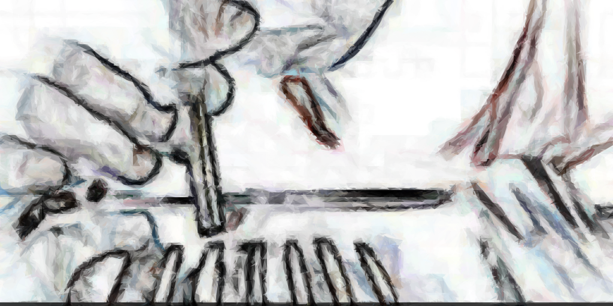

- Von Carl Marcus Prechtler und Bogosta Michael
Kokain oder Cocain ist ein starkes Stimulans und Betäubungsmittel. Es findet weltweit Anwendung als Rauschdroge mit hohem psychischen, aber keinem physischen Abhängigkeitspotenzial.
Die Cocapflanze als Quelle des Kokains wird in Südamerika (Bolivien, Peru und Kolumbien) in einer Höhe zwischen 600 und 1000 m angebaut. Zur Kokaingewinnung unter Laborbedingungen werden die Blätter des Cocastrauchs zerkleinert und eingeweicht. Die Alkaloide werden mit Lösungsmitteln extrahiert und der Auszug verseift (Esterspaltung).
Die Cocapflanze als Quelle des Kokains wird in Südamerika (Bolivien, Peru und Kolumbien) in einer Höhe zwischen 600 und 1000 m angebaut. Zur Kokaingewinnung unter Laborbedingungen werden die Blätter des Cocastrauchs zerkleinert und eingeweicht. Die Alkaloide werden mit Lösungsmitteln extrahiert und der Auszug verseift (Esterspaltung).
